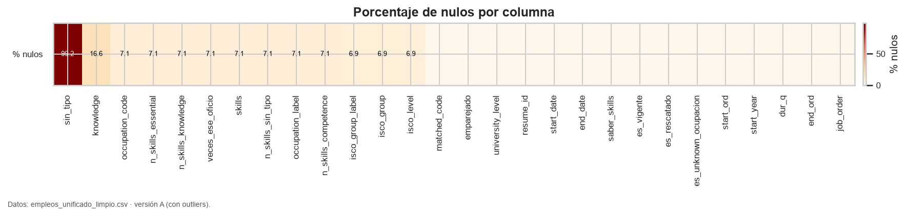
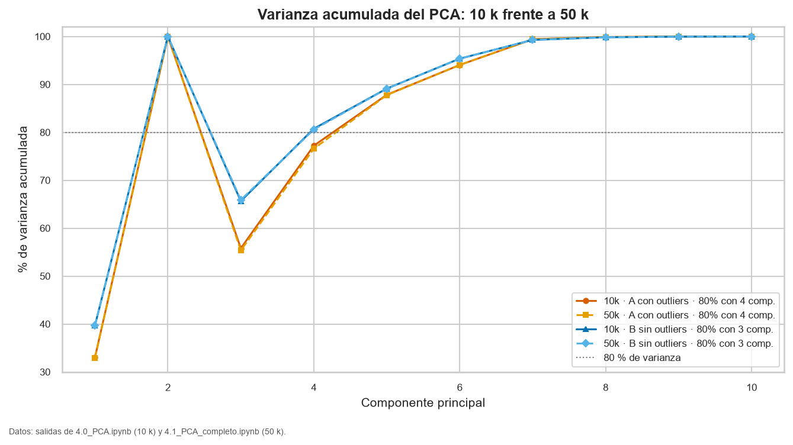
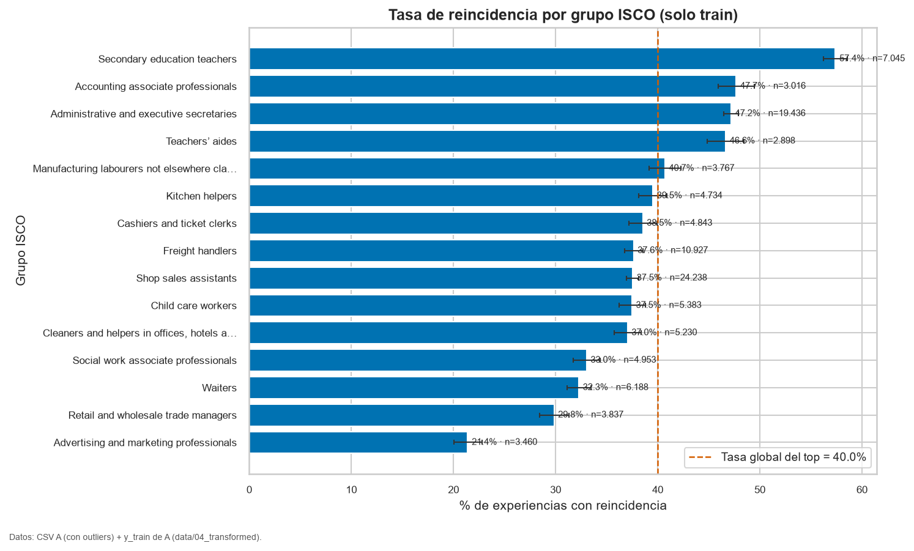
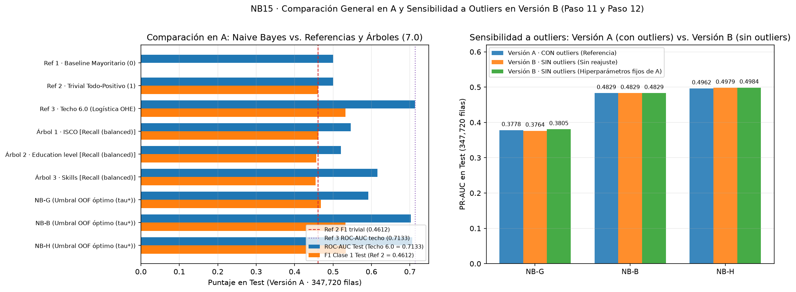
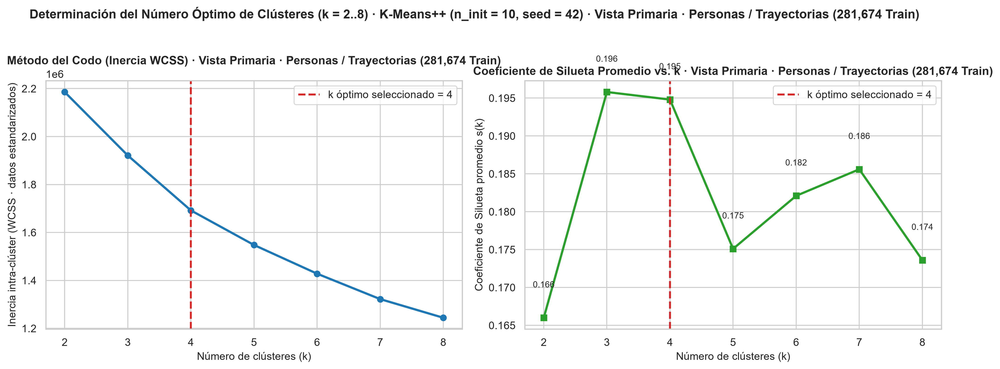
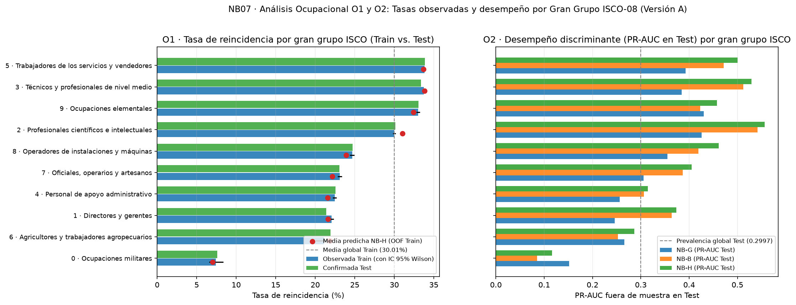
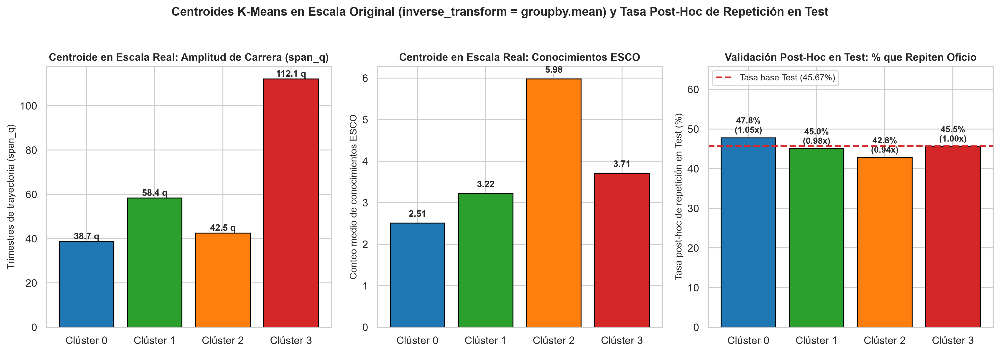

De 1.87 Millones de Empleos a Decisiones Claras: El Viaje Analítico de JobPath
¿Qué es JobPath para alguien sin contexto previo? Es un observatorio laboral que sigue la historia de trabajo de 352,093 personas reales (dataset europeo JobHop v2) y conecta cada empleo con los 3,039 oficios estandarizados del catálogo oficial ESCO v1.2.1 / ISCO-08 para descubrir cómo evolucionan las carreras y por qué una persona vuelve a ejercer un mismo oficio (reincide).
355,308 personas) depurados a 1,738,738 empleos válidos con oficio ESCO en 352,093 personas (92.93 %).2,968 oficios activos en Train (MR-08: competencias del oficio ESCO, no del individuo).417,471 en Train 80 % y 104,225 en Test 20 %) corresponden a un trabajador que regresa a un oficio ya ejercido.ROC-AUC 0.7058, F1 0.5337 en 0.241 s. K-Means (8.0): $k^*=4$ arquetipos sobre el 100 % del censo (error 0.000000).Mapa Completo de los 11 Cuadernos en notebooks/refactor/ (Haz clic en cualquier tarjeta para ir a su diapositiva)
Navegación: teclas ← → · F pantalla completa · Clic en cualquier gráfica para ampliar
1.0_comprension_negocio.md: Acta analítica CRISP-DM Fase 1. Define la pregunta de trayectorias laborales, selecciona JobHop v2 + ESCO v1.2.1 y descarta justificadamente OLE Colombia.2.0_preprocesamiento_jobpath.ipynb: Embudo 1.87M → 1.74M, educación MNAR, filtro ESCO y creación de Versión A (con outliers) vs. Versión B (sin outliers IQR).•
3.0_transformacion.ipynb: Split 80/20 por persona (resume_id, 0 compartidas), RobustScaler y 2,967 dummies en uint8.4.0_PCA.ipynb y 4.1_PCA_completo.ipynb: Identidad aditiva $E = C + K + U$ (rango efectivo 9 de 10) y ahorro de 1 componente en Versión B (3 comp. = 80.59 %).•
5.0_EDA_jobpath.ipynb: Bloqueo anti-fuga (D13: exclusión de veces_ese_oficio), matrices de transición y tasas por grupo ISCO-08.6.0_modelado_fase4 · 7.0_arbol_decision · 7.2_knn: Baselines, techo Logístico (0.7133), 3 Árboles (prof. $\le 4$) y KNN (8.1 h en fuerza bruta).•
8.1_clustering_jerarquico.ipynb: Descarte de single/average/complete por encadenamiento (90 %–99.87 %) y corte de Ward en $k^*=4$.7.1_naive_bayes.ipynb): NB-H logra el 96.48 % del techo lineal (ROC-AUC 0.7058, F1 0.5337, Recall 72.79 %) en 0.241 s con explicación aditiva LLR.• Ganador No Supervisado (
8.0_kmeans_clustering.ipynb): Segmenta el 100 % del censo (352,093 personas) en 4 arquetipos con error de centroides 0.000000.numerical_methods_presentation/index.html: Presentación indexada de Métodos Numéricos (MCO vs. Lagrange) con 8 casos, GeoGebra y auditoría SHA-256 (19/19).Comprensión del Negocio: El Problema de las Trayectorias y la Elección de Fuentes
1. Selección de Fuentes de Datos (KDD-1)
| Fuente | Rol y Volumen Verificado | Decisión |
|---|---|---|
| JobHop v2 Dato crudo oficial |
Historiales secuenciales por persona (resume_id) con fechas trimestrales. Unión train+test+val: 1,871,014 empleos y 355,308 personas. |
✅ Elegida (D01) |
| ESCO v1.2.1 Comisión Europea |
Taxonomía oficial de 3,039 oficios, 10 grupos ISCO-08 y conteos de competencias prácticas y conocimientos. |
✅ Elegida (D01) |
| OLE Colombia Observatorio local |
Publica reportes agregados de graduados pero no historiales secuenciales por persona con fechas de inicio y fin. | ❌ Descartada |
Los datos corresponden al mercado laboral europeo (Bélgica, JobHop v2). Los patrones y el pipeline constituyen un método analítico transferible para observatorios universitarios.
2. Las Dos Preguntas Analíticas del Proyecto
¿Qué factores explican y anticipan que una persona repita un oficio (reincide = 1)?
Definimos formalmente el evento objetivo como reincide = (veces_ese_oficio > 1) sobre la llave (resume_id, occupation_code). En el universo clasificado ocurre en el 30.01 % de Train (417,471 casos) y el 29.97 % de Test (104,225 casos) a través de 2,968 oficios activos.
¿Qué arquetipos naturales de carreras y de empleos existen sin mirar la etiqueta?
Construimos dos vistas 100 % libres de fuga: Vista Personas (V_PERSON, 9 variables sobre 352,093 trabajadores) y Vista Experiencias (V_EXPERIENCE, 7 variables sobre 1,738,738 empleos), reservando reincide exclusivamente para validación externa post-hoc.
3. Criterios de Éxito y Salvaguardas Metodológicas
- Trazabilidad criptográfica (
SHA-256): Cada archivo de entrada (01_rawa04_transformed) se verifica con huella SHA-256 antes y después de correr los cuadernos sin alterar jamás el dato crudo. - Salvaguarda
MR-07(Asociación $\neq$ Causalidad): Los modelos identifican perfiles estadísticos y probabilidades de transición grupales, nunca determinismo individual sobre una persona. - Salvaguarda
MR-08(Atribución al Catálogo ESCO): Los conteos de competencias (n_skills_essential,competence,knowledge) miden lo que exige el oficio según el estándar europeo ESCO, no un examen aplicado al individuo. - Salvaguarda
MR-09(Control de Censura Derecha): Los empleos aún abiertos (Present,5.08 %) se identifican con la banderaes_vigentepara no confundir un contrato en curso con uno de corta duración.
Preprocesamiento y Transformación: Embudo, Educación MNAR, Versiones A/B y Split por Persona
| Métrica Auditada del Pipeline (2.0 y 3.0) | Universo Bruto (2.0) | Clasificado ESCO (3.0) | Train 80 % (Por Persona) | Test 20 % (Por Persona) |
|---|---|---|---|---|
| Experiencias laborales (filas) | 1,871,014 (100 %) |
1,738,738 (92.93 %) |
1,391,018 |
347,720 |
Personas únicas (resume_id) |
355,308 (100 %) |
352,093 (99.10 %) |
281,674 |
70,419 (0 compartidas) |
Educación no reportada (MNAR = 1) |
205,238 (10.97 %) |
200,934 (11.56 %) |
160,664 (11.55 %) |
40,270 (11.58 %) |
Casos Positivos (reincide = 1) |
— | 521,696 (30.00 %) |
417,471 (30.01 %) |
104,225 (29.97 %) |
2.0 y 3.0 (Clic en imagen para zoom):

132,276 filas sin código ESCO (7.07 %) se documentan como exclusión estructural (D05/D07) sin fabricar habilidades artificiales.
GroupShuffleSplit por resume_id garantizamos 0 personas compartidas entre Train y Test.
Reducción de Dimensionalidad (PCA): Colinealidad Exacta y Comparación Versión A vs. B
E) = Competencias Prácticas (C) + Conocimientos Teóricos (K) + Sin clasificar (U) (con U = 0 en el 99.10 % de las filas). Por eso de las 10 variables numéricas solo 9 aportan información independiente (rango efectivo 9) y el 10.º componente tiene varianza 0.0000 %.
Varianza Explicada Acumulada en PCA (Train 1,391,018 filas · Precisión float64)
| Componentes ($k$) | Versión A · Con Outliers (Indiv. / Acum.) | Versión B · Sin Outliers IQR (Indiv. / Acum.) | Interpretación y Decisión Metodológica |
|---|---|---|---|
k = 1 (PC1) |
32.91 % / 32.91 % |
39.68 % / 39.68 % |
Versión B concentra +6.77 pp más de señal en el primer eje (volumen general de competencias ESCO). |
k = 2 (PC2) |
22.71 % / 55.62 % |
26.21 % / 65.89 % |
Segundo eje: contraste entre experiencia temporal (dur_q, job_order) y perfil cognitivo. |
k = 3 (80 % en B) |
19.50 % / 75.12 % |
14.70 % / 80.59 % (≥ 80 %) |
Versión B alcanza el 80 % con solo 3 componentes (k* = 2.95 por interpolación inversa $P_2$). |
k = 4 (80 % en A) |
10.27 % / 85.39 % (≥ 80 %) |
8.50 % / 89.09 % |
Versión A requiere 4 componentes para superar el 80 % (k* = 3.43). |
k = 5 (95 % en B) |
6.22 % / 91.61 % (≥ 90 %) |
6.27 % / 95.36 % (≥ 95 %) |
Versión B supera tanto el 90 % como el 95 % con 5 componentes (k* = 4.10 para 90 %). |
k = 6..9 → 10 |
96.16 % ($k=6$) → 100.00 % ($k=9,10$) |
99.28 % ($k=6$) → 100.00 % ($k=9,10$) |
En $k=9$ se llega al 100.0000 %; el componente 10 vale 0.0000 % por la suma exacta $E = C + K + U$. |
6.0 a 8.1):
Este hallazgo justificó eliminar conteos redundantes en K-Means y Clustering Jerárquico (usando competence, knowledge y la proporción prop_competence_essential sin duplicar essential) y mantener las 2,967 dummies de oficio fuera del PCA para conservar la trazabilidad por profesión.
4.0 y 4.1):
Estabilidad 10k vs 50k vs 1.39M

10,000 y 50,000 registros en Versión A y Versión B. Confirma que la estructura espectral no depende del tamaño muestral y que la Versión B ahorra 1 dimensión en los umbrales de 80 % y 95 %.
Análisis Exploratorio (EDA): Bloqueo de Fuga del Target y Radiografía de los 10 Grupos ISCO
Tasas Reales de Reincidencia en los 10 Grandes Grupos ISCO-08 (1,738,738 empleos)
| Gran Grupo ISCO-08 (1 Dígito) | Filas Train | Personas Train | Tasa Train (IC95%) | Tasa Test | Vs. Media (30%) |
|---|---|---|---|---|---|
5 · Servicios y vendedores |
302,706 |
142,409 |
33.84 % [33.67, 34.01] |
33.87 % |
+3.83 pp (Máx) |
3 · Técnicos y nivel medio |
272,574 |
141,941 |
33.72 % [33.54, 33.90] |
33.37 % |
+3.71 pp (Alto) |
9 · Ocupaciones elementales |
189,819 |
101,030 |
33.03 % [32.81, 33.24] |
33.05 % |
+3.01 pp (Alto) |
2 · Profesionales científicos e int. |
243,705 |
110,488 |
29.98 % [29.80, 30.16] |
30.13 % |
-0.04 pp (Media) |
8 · Operadores de máquinas |
80,665 |
50,927 |
24.66 % [24.37, 24.96] |
24.71 % |
-5.35 pp |
7 · Oficiales, operarios y artesanos |
100,371 |
58,550 |
23.11 % [22.85, 23.37] |
23.08 % |
-6.91 pp |
4 · Apoyo administrativo |
111,705 |
70,795 |
22.46 % [22.21, 22.70] |
22.55 % |
-7.55 pp |
1 · Directores y gerentes |
81,000 |
50,460 |
22.07 % [21.78, 22.35] |
21.37 % |
-7.95 pp |
6 · Agricultores / agropecuarios |
5,080 |
4,288 |
21.12 % [20.02, 22.27] |
21.92 % |
-8.89 pp |
0 · Ocupaciones militares |
3,393 |
3,159 |
7.43 % [6.59, 8.36] |
7.61 % |
-22.58 pp (Mín) |
Consistencia muestral: Las tasas en Train (80 %) y Test (20 %) coinciden dentro del intervalo de confianza de Wilson al 95 % en los 10 grupos.
1,391,018 filas de Train
El EDA demostró que las variables derivadas del conteo de repeticiones (veces_ese_oficio_rob, veces_ese_oficio_bin, n_returns, n_self_loops, exploration_ratio) reproducen el 100 % de la etiqueta reincide porque reincide = (veces_ese_oficio > 1). Decisión D13/D14: Prohibirlas tajantemente en la matriz predictora $X$ de todos los modelos supervisados (6.0 a 7.2) y no supervisados (8.0 y 8.1).
5.0 (Clic en pestañas o zoom):

7.43 % hasta 33.84 % con total consistencia entre Train y Test.
Torneo Supervisado: Comparación Completa entre Baselines (6.0), Árboles (7.0), KNN (7.2) y Naive Bayes (7.1)
Tabla Comparativa Unificada en Test (347,720 experiencias · 70,419 personas · 0 fuga)
| Familia | Modelo y Punto Operativo | Cols X | PR-AUC | ROC-AUC | F1 (Clase 1) | Recall / Prec. | Brier | Fit / Test | Decisión |
|---|---|---|---|---|---|---|---|---|---|
| 6.0 Base | Ref 1 (Todo 0) / Ref 2 (Todo 1) | 0 | 0.2997 |
0.5000 |
0.000 / 0.461 |
100% / 30.0% |
0.2099 |
0.001 s |
Piso trivial |
| 6.0 Boosting | HistGradientBoosting (14 densas) | 14 | 0.4951 |
0.6936 |
0.5151 |
61.1% / 44.5% |
0.2211 |
8.59 / 0.41 s |
Techo denso |
| 6.0 Techo | Logística Regularizada OHE | 2,981 | 0.5109 |
0.7133 |
0.5321 |
61.5% / 46.9% |
0.2108 |
4.01 / 0.01 s |
Techo 100 % |
| 7.0 Árboles | Árbol 1 · ISCO 1d (balanced, prof. 4) |
10 | — | 0.5459 |
0.4620 |
79.6% / 32.5% |
— | 0.02 s |
21.5 % techo |
| 7.0 Árboles | Árbol 2 · Educación (balanced, prof. 4) |
2 | — | 0.5208 |
0.4564 |
87.4% / 30.9% |
— | 0.01 s |
9.8 % techo |
| 7.0 Árboles | Árbol 3 · Skills ESCO (balanced, prof. 4) |
7 | — | 0.6157 |
0.4550 |
54.2% / 39.2% |
— | 0.03 s |
54.2 % techo |
| 7.2 KNN | KNN-D (11 densas, kd_tree, $\tau^*=0.27$) |
11 | 0.4652 |
0.6677 |
0.5010 |
71.2% / 38.6% |
0.1936 |
5.2 / 71.6 s |
Menor a NB |
| 7.2 KNN | KNN-G (Denso + 10 ISCO, $\tau^*=0.27$) | 21 | 0.4928 |
0.6919 |
0.5186 |
71.2% / 40.8% |
0.1887 |
8.8 / 1,104.7 s |
18.4 min Test |
| 7.2 KNN | KNN-W (Denso + 2,967 oficios, brute) |
2,978 | 0.5247 |
0.7245 |
0.5471 |
70.8% / 44.6% |
0.1817 |
0.08 / 29,146.8 s |
❌ 8.1 Horas |
| 7.1 Bayes | NB-G (14 densas) / NB-B (2,971 bin) | 2,971 | 0.4829 |
0.7024 |
0.5323 |
72.9% / 41.9% |
0.1877 |
0.09 / 0.05 s |
94.9 % techo |
| 7.1 Bayes | NB-H · Híbrido (10 densas + 2,971 bin) | 2,981 | 0.4962 |
0.7058 |
0.5337 |
72.8% / 42.1% |
0.1871 |
0.56 / 0.241 s |
🏆 GANADOR |

347,720 filas). NB-H alcanza el 96.48 % del techo de Regresión Logística OHE y supera su F1 (0.5337 vs 0.5321).
Torneo No Supervisado: Por qué Fallan Single/Average/Complete y Cómo Ward y K-Means Coinciden en $k^*=4$
1. Torneo de Métodos de Enlace en Clustering Jerárquico (8.1 · Muestra $n = 3,000$ de Train, $k = 4$)
| Enlace | Cofenética | Silueta | Davies-B. | Calinski-H. | Mín ($n$) | Máx ($n$ y %) | Diagnóstico y Decisión |
|---|---|---|---|---|---|---|---|
ward |
0.4463 |
0.1827 |
1.9489 |
370.72 |
160 (5.3%) |
1,650 (55.00 %) |
✅ Minimiza $\Delta\text{ESS}$; 4 grupos balanceados |
complete |
0.5623 |
0.2249 |
1.3672 |
210.72 |
38 (1.3%) |
2,701 (90.03 %) |
❌ Descartado: 1 mega-clúster absorbe el 90 % |
average |
0.7348 |
0.4431 |
0.8927 |
121.36 |
2 (0.1%) |
2,925 (97.50 %) |
❌ Descartado: encadenamiento severo (97.5 %) |
single |
0.5010 |
0.5048 |
0.4334 |
10.53 |
1 (0.03%) |
2,996 (99.87 %) |
❌ Descartado: patología extrema de chaining |
2. Búsqueda de $k = 2..8$ en Ward (8.1) y K-Means (8.0 · 281,674 Personas y 1.39M Empleos)
| $k$ | Altura Ward | Salto Ward $\Delta h$ | Inercia WCSS (8.0) | Caída % | Silueta Pers. | DBI Pers. | Calinski-H. Pers. | Silueta Exp. |
|---|---|---|---|---|---|---|---|---|
2 |
76.4 → 71.1 |
5.297 |
2,185,781 |
— | 0.1660 |
2.2810 |
45,011.7 |
0.1951 |
3 |
71.1 → 61.0 |
10.190 |
1,921,140 |
-12.11 % |
0.1958 |
1.8498 |
45,006.2 |
0.2342 |
4 ($k^*$) |
61.0 → 50.9 |
10.060 (Corte) |
1,692,018 |
-11.93 % |
0.1948 |
1.6298 |
46,780.8 (Máx) |
0.2465 (Máx) |
5 |
50.9 → 49.5 |
1.431 (-85.8%) |
1,547,831 |
-8.52 % |
0.1751 |
1.6292 |
44,913.6 |
0.2373 |
6..8 |
49.5 → 36.9 |
0.837 .. 7.912 |
1.43M → 1.24M |
-7.7→-5.9% |
0.182→0.174 |
1.49→1.44 |
43.7k → 41.7k |
0.217→0.218 |
single) crea puentes que meten al 99.87 % (2,996/3,000) de las personas en un solo grupo gigante. Solo Ward (8.1) y K-Means++ (8.0) penalizan grupos dispersos y coinciden exactamente en $k^* = 4$ perfiles laborales naturales.

281,674 personas de Train. Confirma el máximo global de Calinski-Harabasz (46,780.83) en $k^* = 4$.
Conclusión Supervisada: Por qué Elegimos Naive Bayes Híbrido (NB-H) como Modelo Ganador
«La Balanza de Pistas»: Descomposición Aditiva Exacta por Variable (LLR)
96.48 % del Techo Lineal en 0.241 s
Explicación para personas sin contexto: El modelo parte de la probabilidad general (30.01 %) y por cada característica del empleo (oficio ESCO, duración, número de empleo y educación) suma o resta un puntaje auditable LLR (Razón de Verosimilitud Logarítmica). Con el umbral óptimo tau* = 0.265 hallado en validación cruzada por persona, detecta al 72.79 % (Recall) de todos los trabajadores que realmente reinciden.
Resultados en Test (347,720 empleos · Bootstrap Pareado IC 95 % por Persona)
| Variante Naive Bayes | Versión | $\tau^*$ | PR-AUC (IC95%) | ROC-AUC (IC95%) | F1 Clase 1 (IC95%) | Recall / Prec. | Brier / Fit |
|---|---|---|---|---|---|---|---|
NB-G · Gaussiano (14 cols) |
Test A | 0.295 |
0.3778 [0.374, 0.382] |
0.5921 [0.589, 0.595] |
0.4687 [0.466, 0.471] |
85.5% / 32.3% |
0.2086 / 0.22s |
NB-B · Bernoulli (2,971 bin) |
Test A y B | 0.270 |
0.4829 [0.478, 0.487] |
0.7024 [0.700, 0.705] |
0.5323 [0.529, 0.535] |
72.9% / 41.9% |
0.1877 / 0.10s |
NB-H · Híbrido (Elegido) |
Test A (Con) | 0.265 |
0.4962 [0.491, 0.500] |
0.7058 [0.703, 0.708] |
0.5337 [0.530, 0.537] |
72.8% / 42.1% |
0.1871 / 0.63s |
NB-H · Híbrido (Sensib.) |
Test B (Sin) | 0.265 |
0.4979 [0.493, 0.502] |
0.7065 [0.704, 0.709] |
0.5341 [0.531, 0.537] |
72.7% / 42.2% |
0.1867 / 0.56s |
NB-H por Sector ISCO-08:
ISCO 5 · Servicios
7.1):

NB-H en los 10 grupos ISCO-08.
Conclusión No Supervisada: Por qué Elegimos K-Means y el Retrato Robot de los 4 Arquetipos
352,093 personas y 1.74M empleos (frente al límite cuadrático $O(N^2)$ de n = 3,000 en Ward que exigiría >317 GB RAM).StandardScaler, los centroides coinciden con groupby("cluster").mean() con diferencia 0.000000 (<10⁻¹²).<0.21 pp y la concordancia entre Versión B y Versión A es ARI = 0.8633 (NMI = 0.8437).| Arquetipo ($k^*=4$) | % Train / Test ($n$ Pers.) | Empleos / Carrera / Dur. | Solap. | Skills: Comp / Know / Ess | Educ / MNAR | Reincide Test (Pers. / Exp.) | ISCO Dom. |
|---|---|---|---|---|---|---|---|
| 0 · Operativo Joven | 43.9% / 43.7% (154,577) |
4.82 emp · 38.7 / 8.8 tr |
1.03 |
18.1 / 2.5 / 20.6 |
1.42 / 0.00 |
47.78% (1.05x) / 31.85% |
5 · Servicios |
| 1 · Estable MNAR | 11.7% / 11.7% (41,062) |
4.72 emp · 58.4 / 14.1 tr |
1.03 |
18.1 / 3.2 / 21.4 |
2.00 / 1.00 |
45.00% (0.99x) / 30.86% |
5 · Servicios |
| 2 · Profesional ESCO | 28.0% / 28.1% (98,553) |
4.92 emp · 42.5 / 10.4 tr |
1.12 |
19.3 / 6.0 / 25.4 |
2.33 / 0.00 |
42.75% (0.94x) / 28.32% |
2 · Científicos |
| 3 · Carrera Larga | 16.5% / 16.4% (57,901) |
5.44 emp · 112.1 / 37.5 tr |
1.61 |
17.6 / 3.7 / 21.3 |
1.45 / 0.02 |
45.55% (1.00x) / 23.13% |
3 · Técnicos |
8.0 · Clic para zoom):

reincide).
Síntesis de Decisiones, Glosario para No Expertos y Portal de Métodos Numéricos
Sinergia Final: Cómo se Unen K-Means (8.0) y Naive Bayes (7.1)
- 1. El Mapa Macro (
K-Means 8.0sobre352,093personas): Descubre sin usar la etiqueta que el mercado se divide en 4 arquetipos reales. Explica por qué los Profesionales Científicos (Clúster 2, ISCO 2,25.37habilidades esenciales) tienen la menor tasa de repetición del mismo código de oficio (42.75 %en Personas /28.32 %en Experiencias;34.34 %en Ward): su movilidad es por ascenso vertical cambiando de código ESCO. En cambio, los Oficios Operativos y de Servicios (Clúster 0, ISCO 5) rotan horizontalmente entre empleadores repitiendo el mismo oficio (47.78 %), y los Empleos de Larga Permanencia (Clúster 3,66.30trimestres ≈ 16.5 años) tienen baja reincidencia por experiencia (23.13 %) al permanecer estables en un solo puesto. - 2. La Brújula Micro (
Naive Bayes Híbrido 7.1sobre1,738,738empleos): Para cada experiencia individual, combina en0.241 slas10variables continuas y las2,971binarias para entregar una probabilidad calibrada de reincidencia (ROC-AUC = 0.7058,F1 = 0.5337,Recall = 72.79 %) desglosada factor por factor mediante puntajesLLR.
📖 Glosario Rápido sin Tecnicismos (Traducción para Todo Público)
ESCO v1.2.1 / ISCO-08: Catálogo oficial europeo de 3,039 oficios agrupados en 10 grandes familias ocupacionales.Reincide (Target): Vale 1 cuando el trabajador vuelve a un oficio que ya había ejercido antes (30.01 %).MNAR (Educación): Dato faltante informativo; se separa en la bandera educacion_no_reportada sin rellenar con cero.IQR y RobustScaler: Métodos basados en la mediana y cuartiles que evitan que valores extremos deformen las distancias.E = C + K + U: Habilidades Esenciales = Competencias prácticas + Conocimientos teóricos + Sin clasificar.Zero Target Leakage: Prohibición estricta de incluir la respuesta (reincide) dentro de las variables de entrada $X$.LLR (Log-Likelihood Ratio): Puntaje aditivo que muestra cuánto suma o resta cada pista en Naive Bayes.MR-04 a MR-09: Reglas de rigor: nodos distintos (04), rechazo $R^2<0.30$ (06), no causalidad (07), atribución ESCO (08) y empleos cerrados (09).Módulo Indexado: Métodos Numéricos Aplicados a JobPath (Regresión MCO vs. Interpolación de Lagrange)
En cumplimiento del punto 5, aquí queda indexada y conectada la presentación interactiva ubicada en numerical_methods_presentation/index.html, donde se evalúan por separado los métodos numéricos sobre el mismo universo de 1.74M de empleos y 3,039 oficios ESCO:
Caso en index.html |
Método Numérico | Hallazgo Principal Verificado |
|---|---|---|
Caso 01 (RL-01) |
MCO + WLS | Progresión de habilidades del oficio por paso de carrera ($k=1..10$): R² = 0.9955 (+0.225 hab./paso) y control de Paradoja de Simpson. |
Caso 02 (RL-02) |
MCO + Regla MR-06 |
Estructura del catálogo ESCO (3,039 oficios): transferibilidad transversal del 57.9 % y rechazo automático cuando R² < 0.30 (greenShare R² = 0.00004). |
Caso 03 (RL-04) |
MCO Centrado $t-2000$ | Deriva anual 2000–2019 (R² = 0.9729), mejora numérica de 4,672× al centrar el año y peligro de extrapolación lineal en 2021–2027 (-4.96 trim.). |
Caso 04 (RL-05) |
Invarianza Afín MCO | Demostración en 4 vías (1.74M filas) de que RobustScaler reescala pendientes por $s_x/s_y$ dejando invariante R² (diferencia 7e-14). |
Caso 05 (LG-01) |
Lagrange + Chebyshev | Curva de supervivencia laboral ($q=1..40$): eliminación del Fenómeno de Runge reduciendo el error máximo 19.4 veces (2.53 → 0.1301) con 0 violaciones. |
Caso 06 (LG-02) |
Lagrange Inverso $P_2$ | Interpolación directa e inversa en PCA con guarda MR-04: para retener el 90 % de varianza, Versión B requiere k* = 4.10 vs. 4.33 en Versión A. |
Casos 07–08 (HYB) |
LOOCV + GeoGebra + SHA-256 | Torneo LOOCV en 4 regímenes, 5 scripts para GeoGebra Classic y auditoría criptográfica SHA-256 (19/19 pruebas con error < 10⁻¹⁰). |